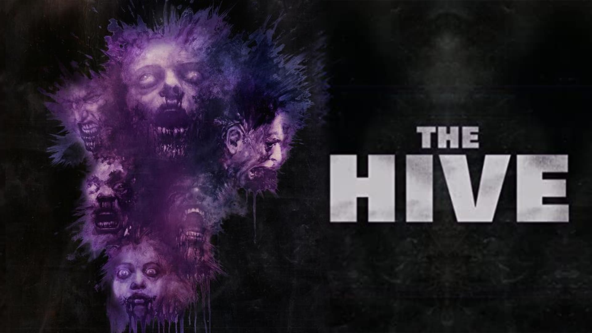
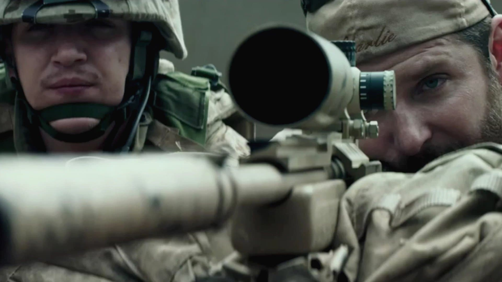
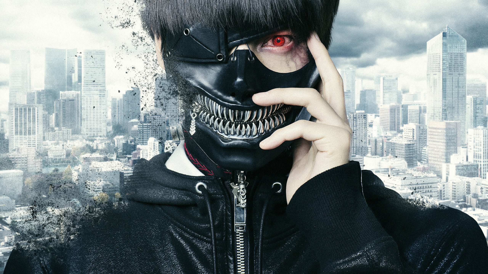
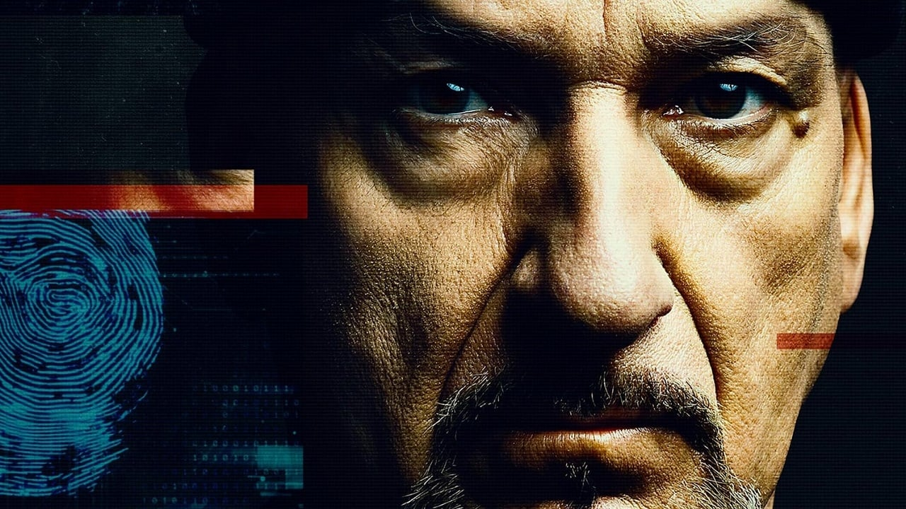
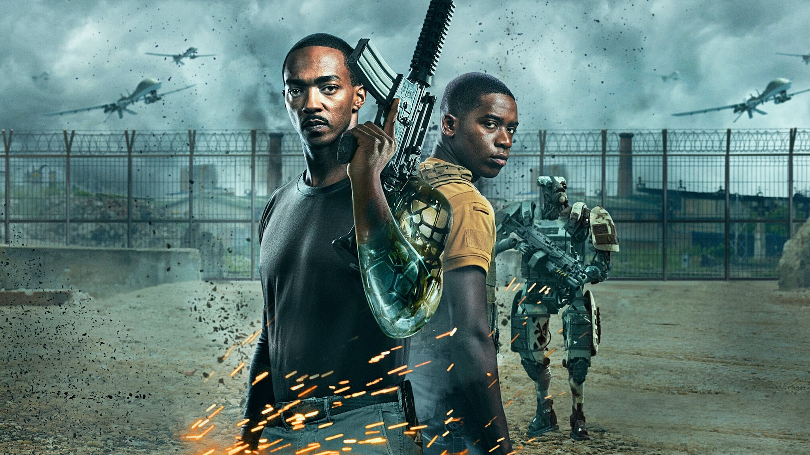

Sniper Americano
História real de Chris Kyle, atirador de elite das forças especiais da marinha dos Estados Unidos. Durante a guerra do Iraque, sua missão era uma só- proteger seus companheiros. Seu dever fez dele um dos maiores atiradores da história americana. Sua precisão salva inúmeras vidas, mas também o torna um alvo preferencial. Quando Kyle finalmente volta para casa, ele descobre que não tem como deixar a guerra para trás.




